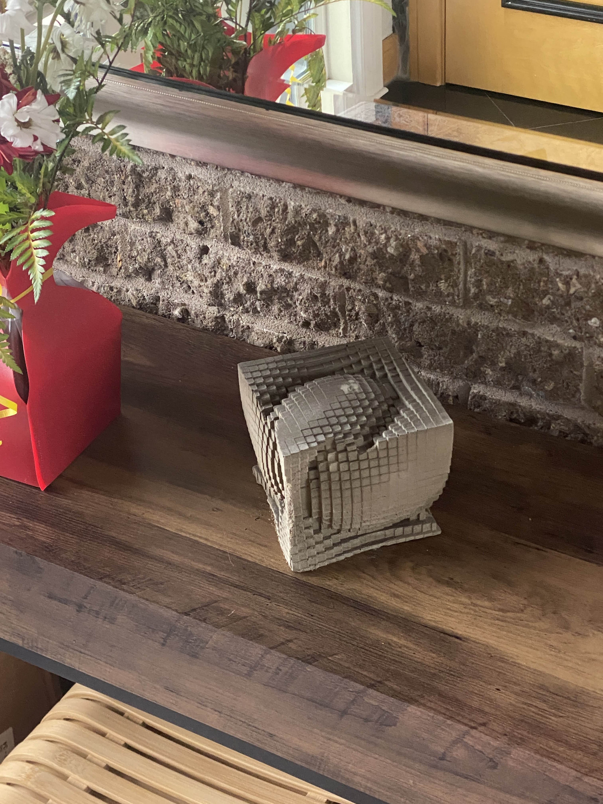
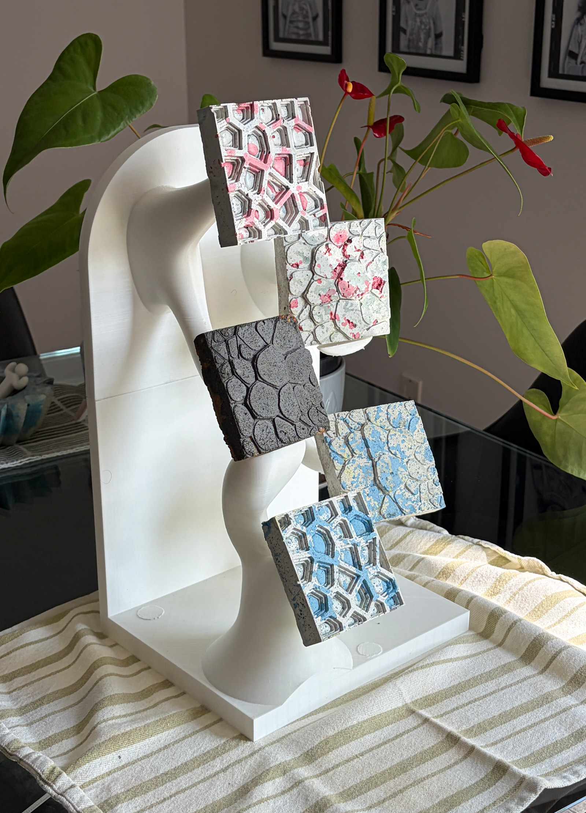
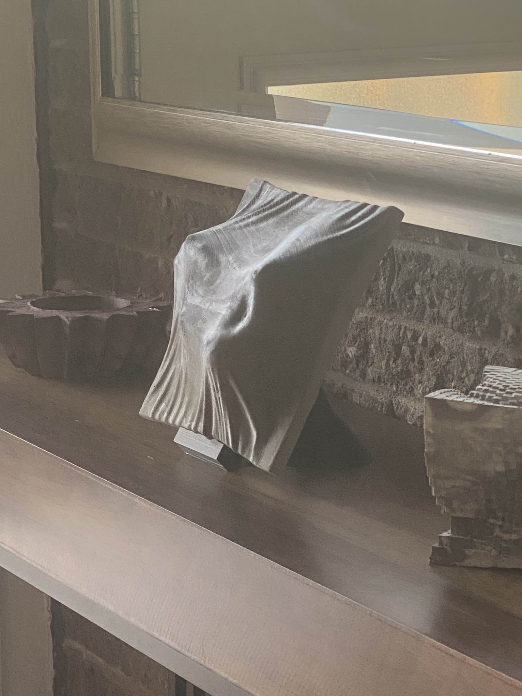


< The Studio >
Founded in 2025 and based in Montreal, Studio Krivo specializes in the design and production of innovative sculptures.
Utilizing advanced digital modeling through Grasshopper, 3D printed molds, and our own custom engineered concrete mixes, Studio Krivo offers institutions and partners works that combine technical innovation with lasting artistic value.
Gallery
Methodology
-
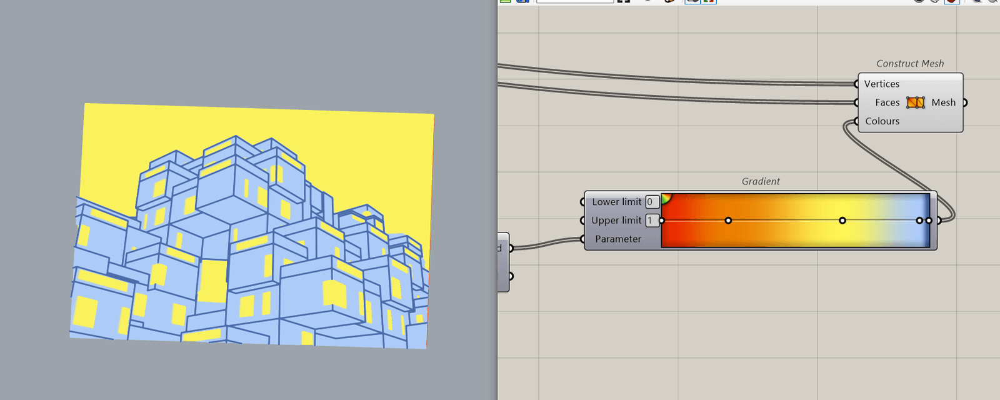
Step 1: Creating the Design
Every project starts with some sketches and brainstorming until a solid idea can be conceptualized. From there, the design is 3D-modeled in Rhino3D and Grasshopper where it can be visualized and rendered to see how it would look realistically. Many iterations are then made to find the best design possible for fabrication.
-
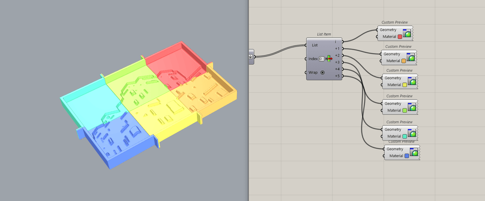
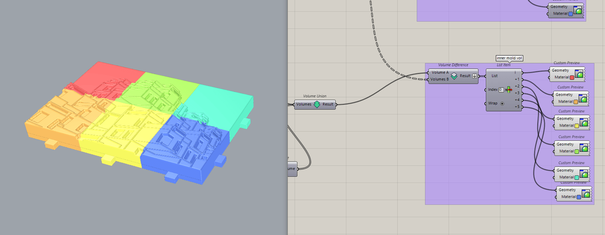
Step 2: Creating the Mold Designs
Once the design has been completed, an inner and outter mold is then made using the Dendro plugin for Grasshopper. This plugin allows us to create molds that ensure silicone will only be cast where it is needed, greatly reducing the cost of the project. This method ensures we use the least amount of recources necessary to achieve the greatest amount of details possible.
-
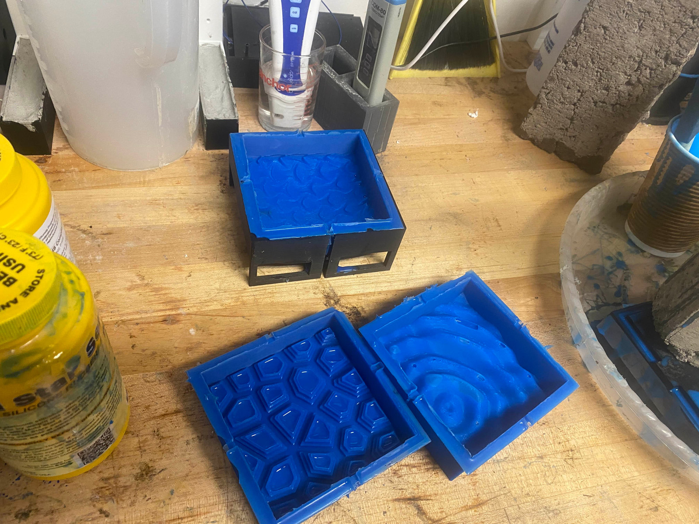
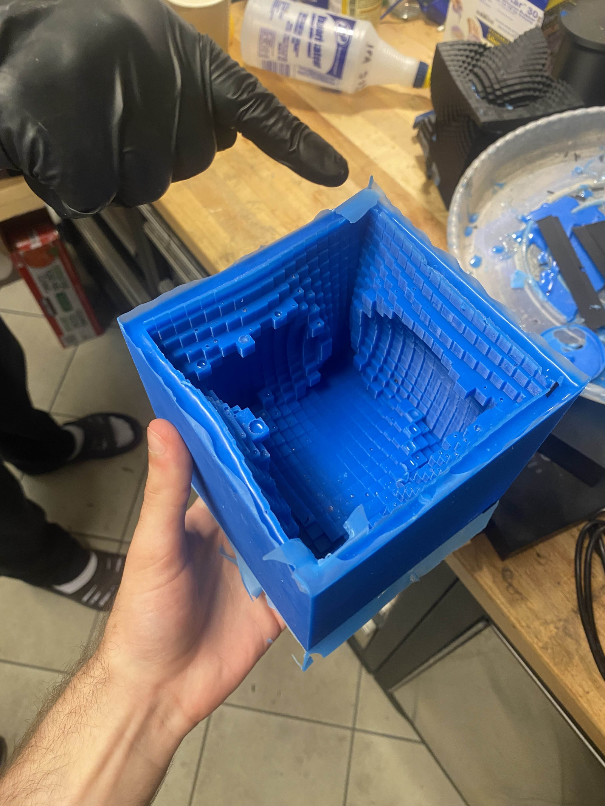
Step 3: Creating the Silicone Mold
Once the molds have been printed, they are placed together and all gaps are sealed to prevent any leakage. Silicone is then painted on to the inner mold, allowing it to seep into every crevice, and then poured into the outer mold. Both molds are then placed together and the silicone is left to cure for six hours. Once complete, the silicone mold is examined and any imperfection is then corrected.
-
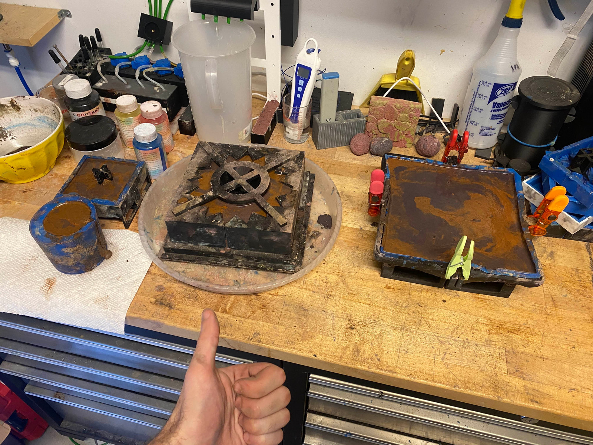
Step 4: Casting the Concrete
Every project has their own set of conditions that need to be assessed before the concrete mix can be made to ensure the most optimal mix design. The concrete mix is different for sculptures that rest on a flat tabletop surface to pieces that are hung up on a wall. Once a mix design has been made, it's casted in the silicone mold and a custom 3D-printed support structure is placed inside the concrete if needed.
-
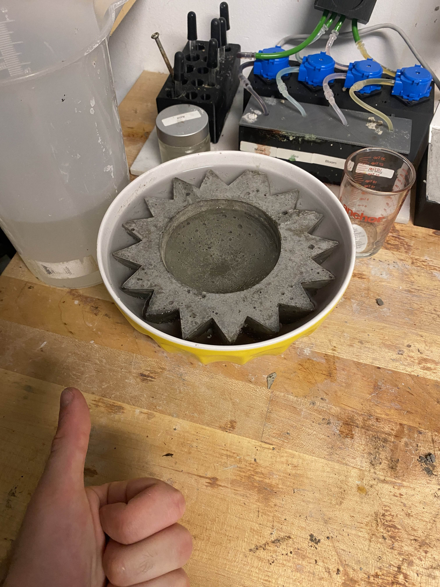

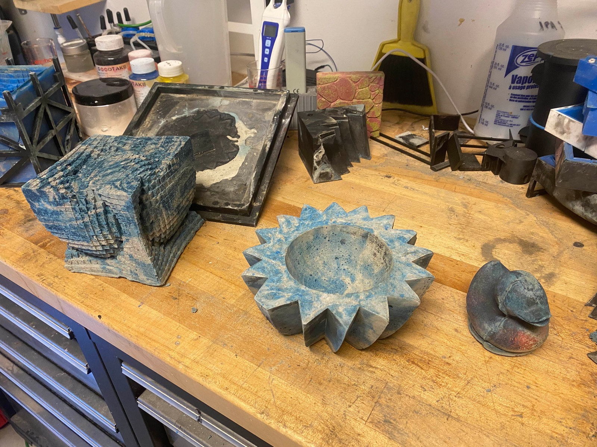
Step 5: Letting the Concrete Cure
The curing process depends on the size of the project. For smaller scale sculptures, the concrete is left to cure in a tub of water completely submerged for two weeks. For larger scale sculptures and wall art pieces, the concrete is left to cure in the mold where it is misted at a consistent rate throughout the process to avoid it from drying up. Once cured, the concrete is polished and waxed as needed, and then finally it is ready to be enjoyed!
About Us
Hello, my name is Etan Krivorot and I am the founder of Studio Krivo.
I am currently pursuing a Bachelor’s degree in Civil Engineering at McGill University, with plans to complete a Master’s degree in Architecture afterwards. I love being creative and designing any idea that comes to mind, especially making 3D models I can later turn into sculptures, renders, and other works of art.
I spend a lot of my time learning how to model in Rhino 3D, more specifically, parametric modeling with Grasshopper. I love discovering new plugins for Grasshopper, exploring their capabilities, and determining how they could be used in new and exciting ways.
I plan on becoming an architect and studying design all around the world, deriving inspiration from as many sources as I can learn from. I'm committed to learning as much as I can about creative design and the different thought processes that go into creating sustainable, thought provoking, and artistic buildings.
Contact
Interested in working together? Have any questions for us?
We are always open for new opportunities.
Send us an email:
Etan@krivorot.com